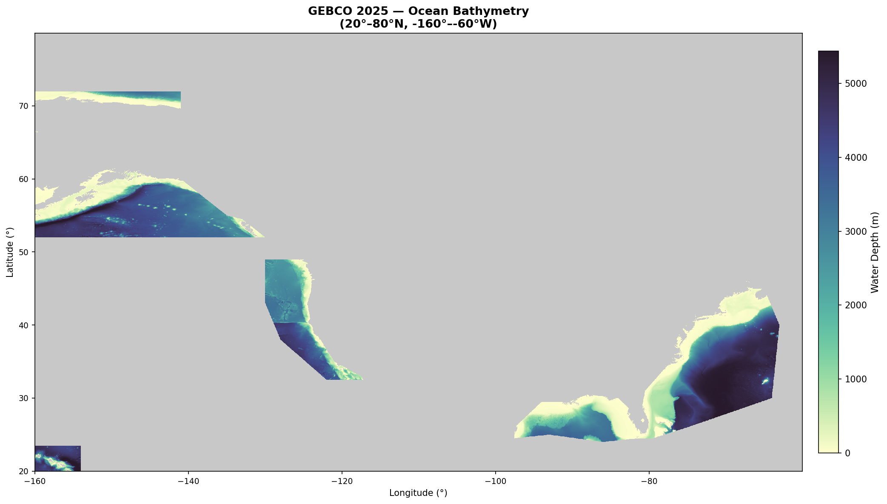
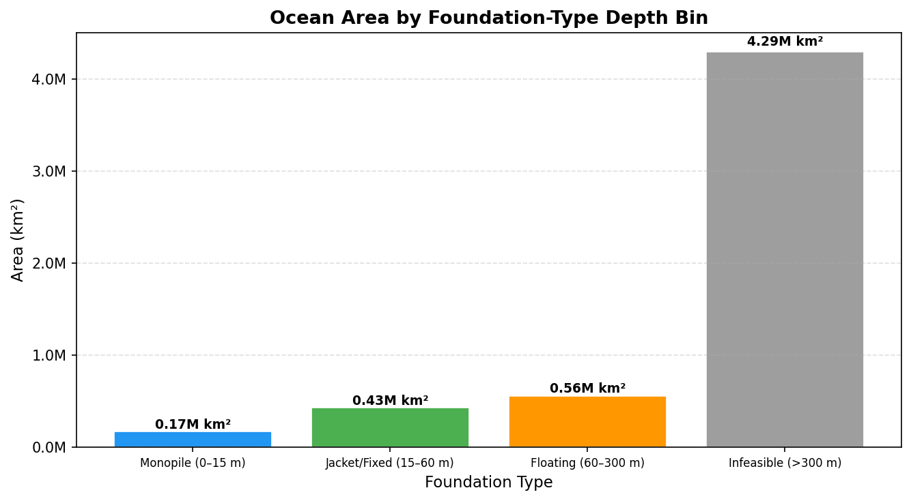
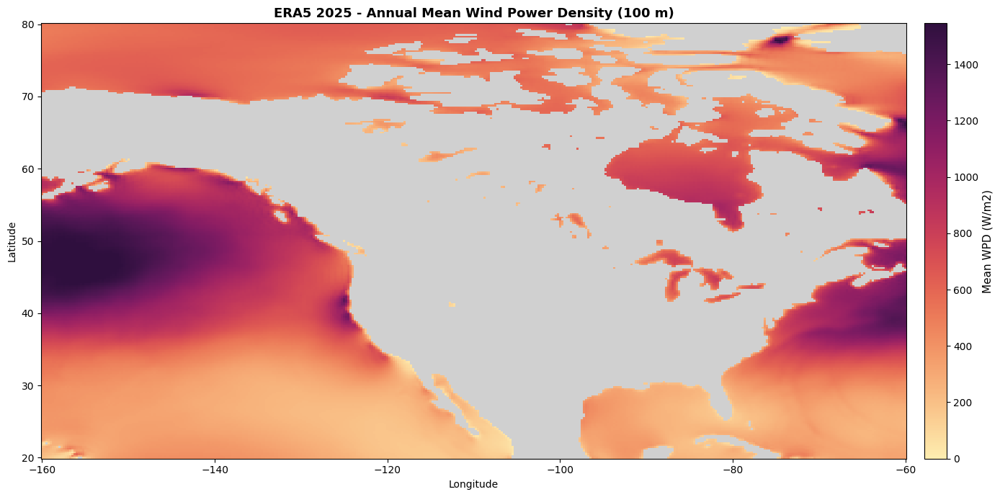
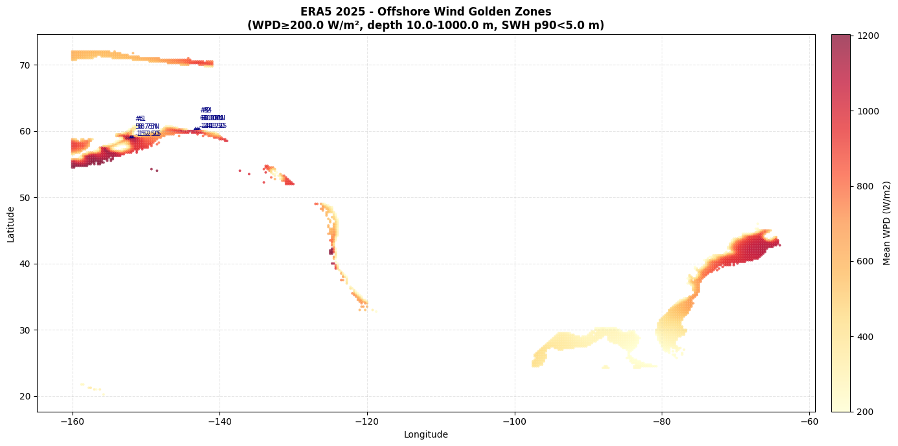
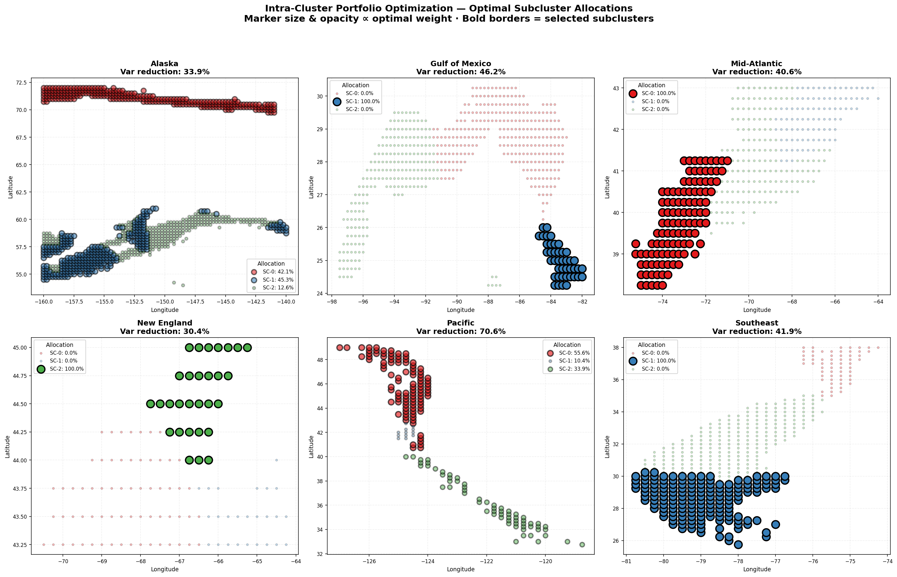
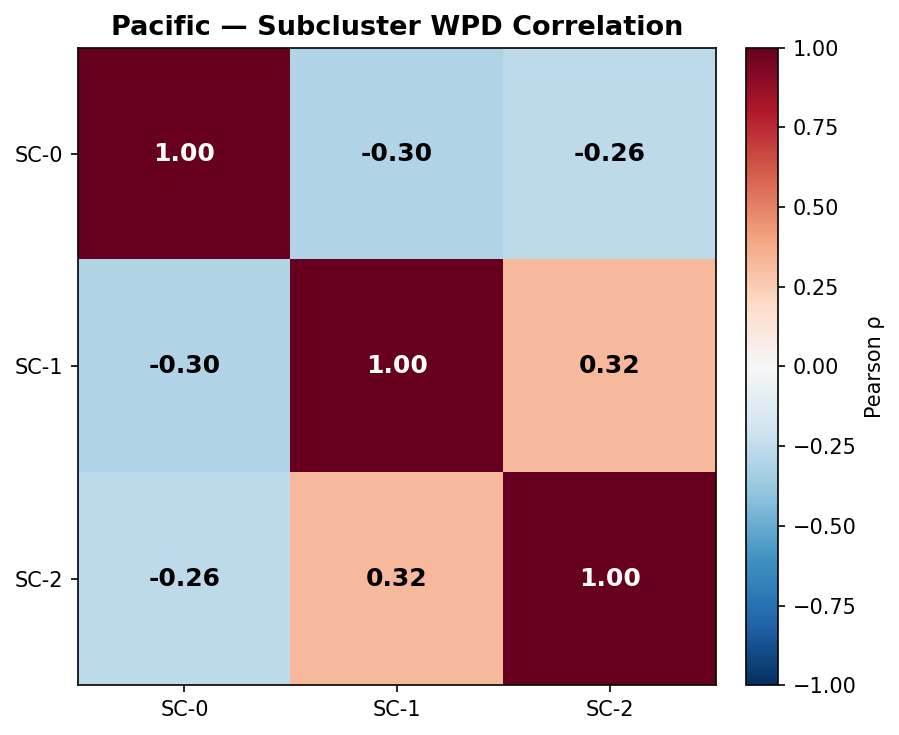
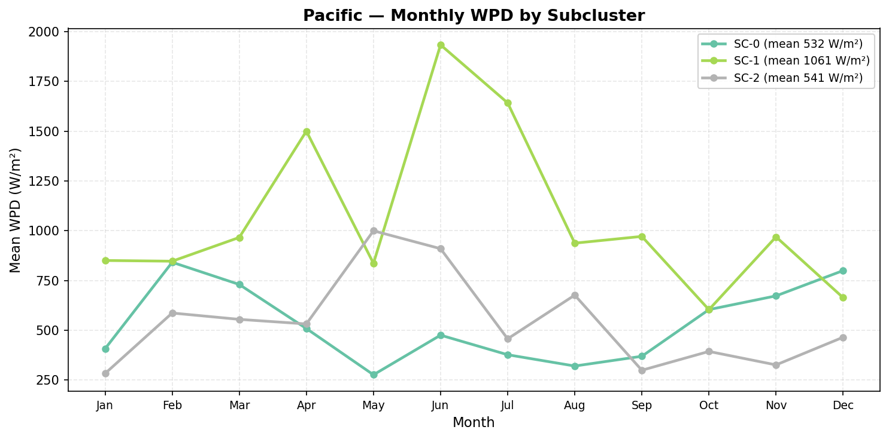
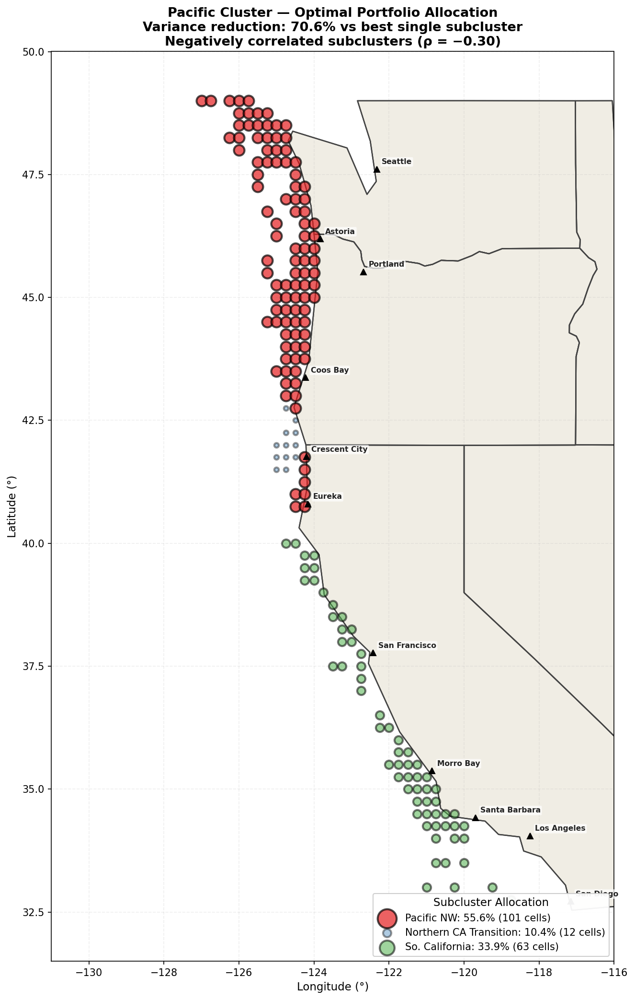
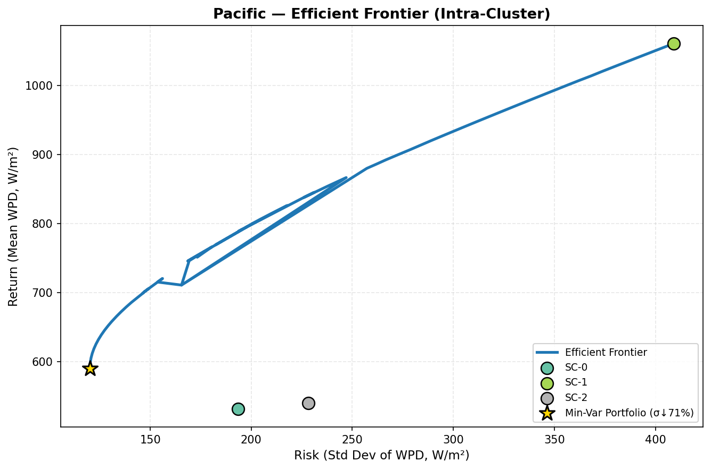
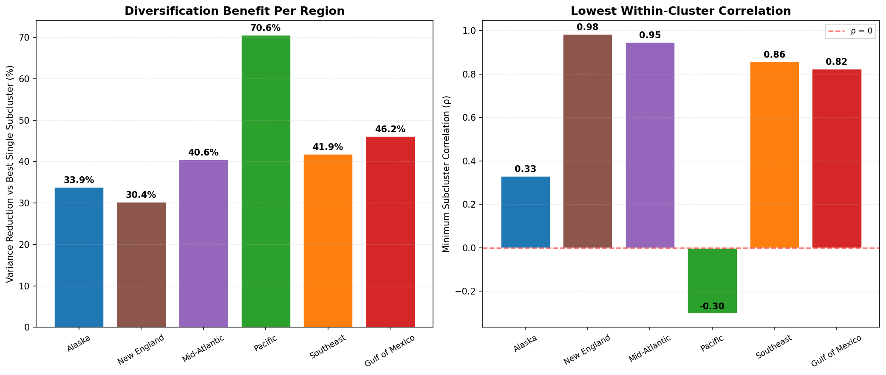

Finding regions where geographic diversification maximally stabilizes wind power output across seasons
Wind power output varies dramatically by season and location. A single site can swing 3× between peak and trough months.
Hypothesis: Within each U.S. coastal region, sub-clusters of sites exist with negatively correlated monthly wind power density profiles. A Markowitz-style portfolio allocation across these sub-clusters can reduce output variance by >30% vs. the best single sub-cluster.
ECMWF hourly data, full year 2025
General Bathymetric Chart of the Oceans
GEBCO 2025 ocean depth across the U.S. study area — deeper waters require floating foundations

Depth determines foundation technology — and cost. Most viable area requires floating platforms.

Annual mean WPD from ERA5 2025 — highest densities in the North Atlantic and Alaskan waters

Sites passing all physical filters: sufficient wind, safe waves, suitable depth, stable seabed

Key insight: We treat sub-clusters as "assets" with monthly WPD as "returns." Anti-correlated sub-clusters provide natural hedging — when one area has low wind, another has high wind.
Marker size & opacity reflect optimal portfolio weight. Bold borders indicate selected sub-clusters.



Optimal weights: Pacific NW 55.6% • N. California 10.4% • S. California 33.9%



| Region | Variance Reduction | Min ρ | Portfolio WPD | Portfolio σ |
|---|---|---|---|---|
| Pacific | 70.6% | −0.30 | 590 W/m² | 120 W/m² |
| Gulf of Mexico | 46.2% | 0.82 | 215 W/m² | 118 W/m² |
| Southeast | 41.9% | 0.86 | 287 W/m² | 142 W/m² |
| Mid-Atlantic | 40.6% | 0.95 | 706 W/m² | 332 W/m² |
| Alaska | 33.9% | 0.33 | 780 W/m² | 327 W/m² |
| New England | 30.4% | 0.98 | 729 W/m² | 321 W/m² |
Click regions to explore sub-clusters • Hover cells for detail • Gold dashed lines = BOEM lease areas
All 8 active BOEM lease / Wind Energy Areas fall within our golden-zone cells, confirming our siting methodology
| BOEM Lease Area | Our Region | Sub-cluster | Mean WPD | Status |
|---|---|---|---|---|
| Humboldt WEA | Pacific | SC-0 (Pacific NW) | 652 W/m² | In Golden Zone |
| Morro Bay WEA | Pacific | SC-2 (S. California) | 433 W/m² | In Golden Zone |
| Brookings OR | Pacific | SC-1 (N. California) | 1,002 W/m² | In Golden Zone |
| NY Bight | Mid-Atlantic | SC-0 (Nearshore) | 726 W/m² | In Golden Zone |
| Vineyard Wind | Mid-Atlantic | SC-2 (Mid-Shelf) | 917 W/m² | In Golden Zone |
| Gulf of Maine | New England | SC-0 | 800 W/m² | In Golden Zone |
| Kitty Hawk | Southeast | SC-0 (Cape Hatteras) | 532 W/m² | In Golden Zone |
| GOM Lake Charles | Gulf of Mexico | SC-2 (Western Gulf) | 339 W/m² | In Golden Zone |
8 / 8 BOEM lease areas confirmed. Every active federal wind energy area falls within our independently-derived golden zones — validating our multi-criteria siting approach. Pacific leases (Humboldt, Morro Bay, Brookings) span all 3 sub-clusters, supporting our diversification thesis.
All other regions have minimum sub-cluster correlations above +0.33, meaning their seasonal profiles move together. The Pacific's sub-clusters actively offset each other.
Business impact: 70.6% variance reduction → more predictable revenue streams → lower cost of capital for project financing. In offshore wind, reducing output uncertainty by even 10% can lower the weighted average cost of capital by 50–100 bps — worth hundreds of millions over a project's 25-year life.
Core takeaway: Geographic diversification within a single wind region can reduce output variance by up to 70% — a fundamentally different approach to wind farm siting that borrows from financial portfolio theory.
Sidharth Swamy • Muzammil Cheema
Stack: Python • xarray • DuckDB
• SciPy • scikit-learn • Matplotlib
Data: ERA5 (ECMWF) • GEBCO 2025 •
Markowitz Mean-Variance